Os pincéis de fábrica
PH2D · Painter · o que a missão Pincéis entregou, e como testar cada um
O que mudou, numa frase: a caixa de pincéis que vem com o
PH2D foi refeita pincel a pincel, cada um pintado lado a lado com o app de referência (o Rebelle, e
o Krita, o MyPaint ou o ArtRage onde o Rebelle não tem igual) — e agora são
45 pincéis, cada um com a cara do seu material e diferente dos vizinhos.
16 no modo Digital · 29 no modo Wet Paint (tinta molhada)
45
18
Os dois selos que você vai ver ao lado do nome. aprovado
passou no exame lado a lado: dois revisores que não sabiam qual era qual não viram diferença
importante para o original. ajustado
pincel que já existia, foi corrigido para ficar mais perto do original, mas ainda tem uma
diferença visível — fica na caixa porque já é útil e é diferente
dos outros. O que falta a cada um está na última página.
Nenhum pincel pesa: todos foram medidos pintando a 200 px e nenhum passa do tempo de
um quadro de tela (o mais pesado, o Ink Brush, usa três quartos desse tempo).
Duas perguntas para você responder durante o teste estão nas
páginas Canetas e nanquim (a ponta fina no fim do traço) e Lápis e carvão (o tamanho máximo de cada pincel).
Elas estão marcadas com esta cor.
As miniaturas são as mesmas que o PH2D mostra na
lista de pincéis: é o próprio pincel a pintar uma onda azul. As faixas largas de cada
categoria são fotos do exame: o original à esquerda, o nosso no meio.
Abrir e achar os pincéis
Cole isto inteiro num terminal.
cd /home/enio/Documentos/Projetos/PH2D/Worktrees/line-PainterWatercolor && PH2D_WETPAINT_SMOKE=2 ./target/smoke/ph2d-host-desktop
O PH2D abre já no Painter, numa tela branca, no modo Wet Paint,
com dois traços azuis inclinados já pintados (são do Oil Bristle; servem de
«outra cor» para você pintar por cima). Há muito espaço livre para riscar.
Se a janela não abrir, ou abrir sem a tela branca, pare e me mande o que o
terminal escreveu.
Abra a lista de pincéis. No painel do pincel, a primeira linha é o
Paint Mode (o modo de pintura) e logo abaixo dela está o campo Preset,
com o nome do pincel atual (Oil Bristle). O Preset aparece em qualquer
modo (Digital, Watercolor, Impasto ou Wet Paint) e lista os pincéis de todos. Clique nele.
Abre a lista, arrumada por tipo de pincel, como nos apps de pintura:
BASIC, PENCIL, INK, MARKER, PASTEL,
OIL, WATERCOLOR, AIRBRUSH, TEXTURE,
BLEND & ERASE, EFFECTS. Esses títulos são pequenos, em
letras maiúsculas e cinzentas, com um risco fino por cima — são só títulos,
não se clicam. Dentro de cada tipo, os pincéis do modo em que você está
vêm primeiro. Os seus favoritos ficam no topo.
Se um título parecer um pincel apagado, ou houver um título para quase
cada pincel, está errado.
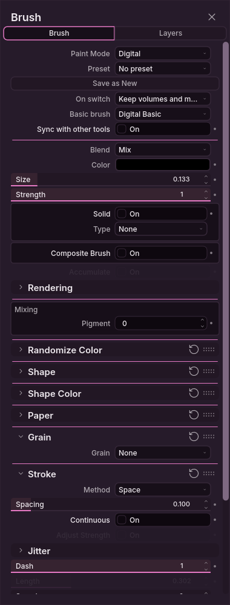
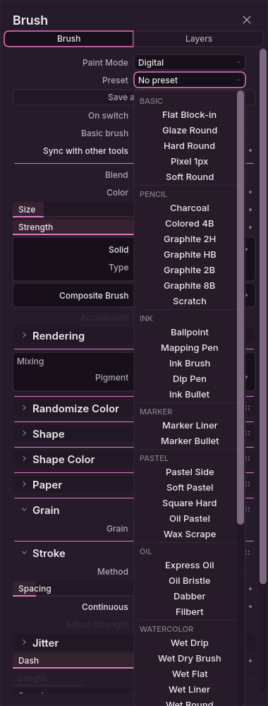
Clique numa miniatura e risque na tela.
Clicar num pincel de outro modo troca o modo sozinho: o Paint Mode,
logo acima, passa por exemplo de Wet Paint para Digital. Vale a partir de
qualquer um dos quatro modos. Não precisa trocar à mão.
Ctrl+Z tira o último traço.
Como saber que deu errado (vale para todas as páginas seguintes):
um pincel pinta em branco, ou não pinta nada (exceção: os
efeitos de Efeitos e carimbos só aparecem por cima de tinta);
dois pincéis pintam igual;
clicar num pincel não muda nada na tela, ou aparece um aviso dizendo
que o pincel não pôde ser aplicado;
a lista diz que alguns ficheiros de pincel não puderam ser lidos;
a miniatura de um pincel não se parece nada com o traço que ele faz.
O que experimentar em cada pincel (o mesmo roteiro em todas as páginas)
Pressão leve → forte num só traço: veja se engrossa e/ou escurece aos poucos, sem degrau.
Traço rápido e traço lento: o rápido não pode virar bolinhas separadas.
Por cima de outra cor (os traços azuis já pintados, ou um seu de outra cor): veja se cobre, se mistura, ou se fica transparente — cada página diz o que esperar.
Tamanho pequeno e grande (o campo de tamanho, Size): o pincel tem de manter a cara dele nos dois.
1 · Básicosmodo Digital · 5 pincéis
Os pincéis do dia a dia: bloquear, sombrear, velar, pixel.
Hard Roundaprovado
Redondo de borda firme, para bloquear formas e desenhar linhas limpas.
a borda sai borrada, ou a linha fina de pressão leve falha.
Soft Roundaprovado
Macio, sem borda, para luz e sombra em degradê.
aparece contorno duro ou textura no degradê.
Flat Block-inaprovado
Ponta chata e dura: larga no traço deitado, fina no de pé, para massas rápidas.
o traço de pé sai tão largo quanto o deitado, ou a ponta arredonda.
Glaze Roundaprovado
Véu translúcido que escurece aos poucos, passada a passada.
uma única passada já cobre tudo, chapado.
Pixel 1pxaprovado
Um pixel exato, sem meio-tom, para pixel art.
a linha sai com borda cinza ou ocupa dois pixels (veja com zoom).
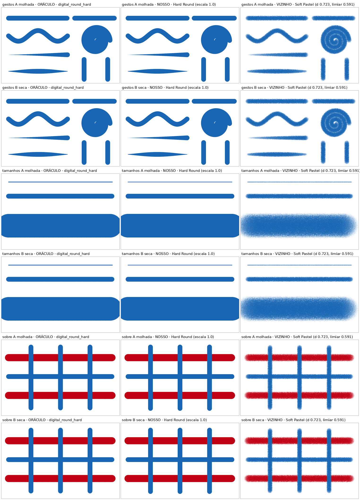
Foto do exame — esquerda: o app de referência; meio: o nosso; direita: o nosso pincel mais parecido, para ver que são diferentes.
Experimente
Hard Round com pressão leve→forte: a linha engrossa sem degrau.
Glaze Round: passe 3 vezes no mesmo lugar — cada passada escurece um pouco.
Flat Block-in: risque deitado e depois de pé — larguras bem diferentes.
Pixel 1px: aproxime o zoom — só quadradinhos cheios, nada cinza.
2 · Efeitos e carimbosmodo Digital · 6 pincéis
Os três primeiros só mexem no que já está pintado: sobre o papel branco vazio eles não deixam nada, e isso é o certo. Pinte uma mancha de cor antes. Os outros três carimbam formas.
Dodgeaprovado
Clareia o que já está pintado, como uma luz por cima.
sobre a cor não clareia. (Sobre o branco vazio não aparecer é normal.)
Burnaprovado
Escurece o que já está pintado, como uma sombra por cima.
escurece numa faixa larga por igual, em vez de mais forte no centro.
Color Glazeaprovado
Troca a cor de uma área sem mudar o claro e o escuro dela.
a área fica mais clara ou mais escura do que estava.
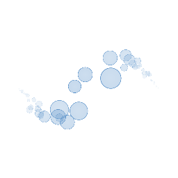
Bokehaprovado
Discos de luz desfocada, de vários tamanhos, para luzes de fundo.
os discos saem chapados, sem o anel claro na borda.
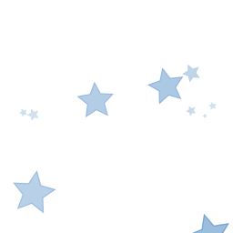
Starsaprovado
Estrelinhas de luz espalhadas ao longo do traço, para céu noturno.
a pressão leve não deixa estrelinhas, ou elas crescem sem parar.
Halftoneaprovado
Retícula de pontos, a trama do mangá.
a trama escorrega junto com o traço, em vez de ficar presa à tela.
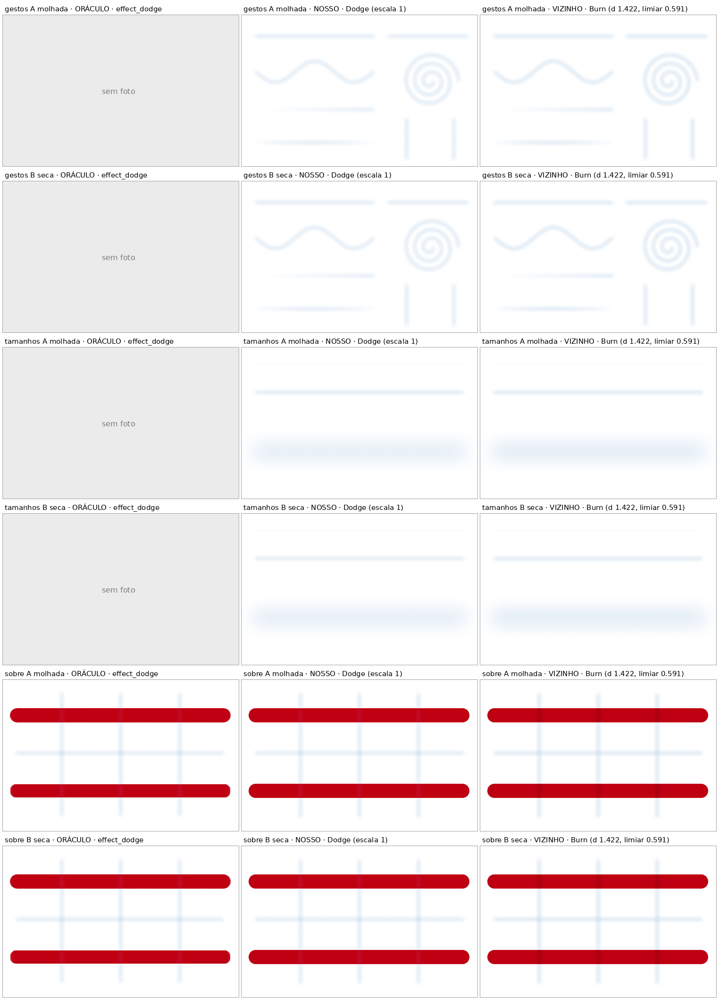
Dodge por cima de tinta — esquerda: o app de referência; meio: o nosso; direita: o nosso Burn, que faz o contrário.
Experimente
Pinte uma mancha com o Hard Round e passe Dodge numa metade e Burn na outra.
Color Glaze com outra cor sobre a mancha: a cor muda, o claro/escuro fica.
Halftone: dois traços que se cruzam — os pontos ficam alinhados na mesma grade.
3 · Borrachas e esfuminho2 no Digital · 1 no Wet Paint
Ferramentas que tiram ou movem tinta: também só fazem sentido por cima do que já está pintado.
Hard Eraseraprovado
Apaga com borda dura, para recortar formas.
a borda apagada sai esfumada, ou fica resto de tinta em volta.
Kneaded Eraseraprovado
Borracha macia: levanta luz sem furar até o papel.
apaga até o branco de uma vez, em vez de só clarear.
Blender Softaprovado
Funde as cores onde passa, sem as arrastar para longe — para pele e céu (Wet Paint).
a mistura se espalha muito além da tinta que estava ali.
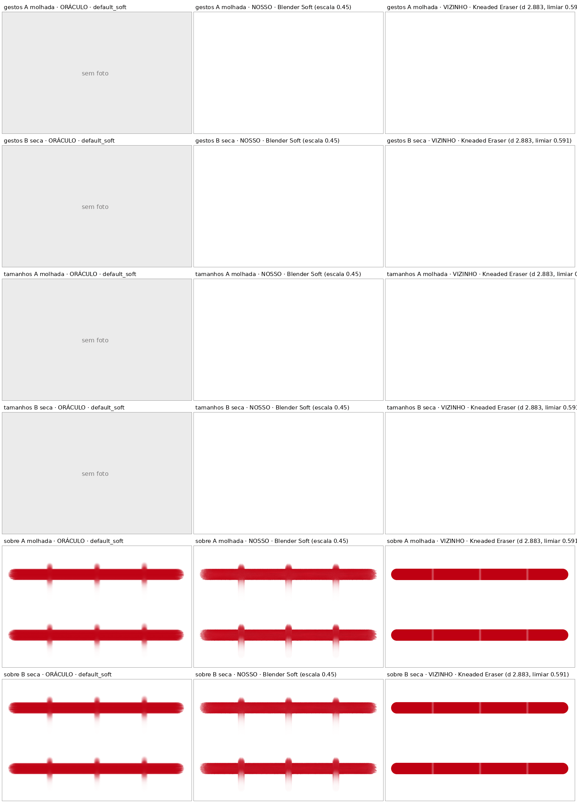
Blender Soft por cima de tinta — esquerda: o app de referência; meio: o nosso; direita: o nosso pincel mais parecido, para ver que são diferentes.
Experimente
Kneaded Eraser sobre os traços azuis: clareia, não abre buraco branco.
Pinte azul e vermelho encostados (Wet Paint) e passe o Blender Soft na junta.
Hard Eraser: corte um traço ao meio — a borda do corte fica nítida.
4 · Canetas e nanquim2 no Digital · 3 no Wet Paint
Do caderno à arte-final.
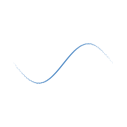
Ballpointaprovado
Esferográfica de caderno: traço leve, translúcido, com falhas (Digital).
o traço leve sai cheio e opaco.
Mapping Penaprovado
Pena de traço fino e firme, para contorno e detalhe (Digital).
aparece uma bolha no fim da linha, ou pontinhos ao longo dela.
Dip Penajustado
Bico de pena: fino a grosso pela pressão, a tinta empoça (Wet Paint).
a borda sai como uma fila de bolinhas.
Ink Bulletajustado
Ponta redonda de tinta, largura quase fixa, para contorno uniforme (Wet Paint).
o começo do traço sai escuro e cheio logo de cara, sem entrada.
Ink Brushajustado
Pincel de nanquim de grande variação e ponta afiada, para arte-final (Wet Paint).
o traço inteiro sai preto chapado, sem variação.
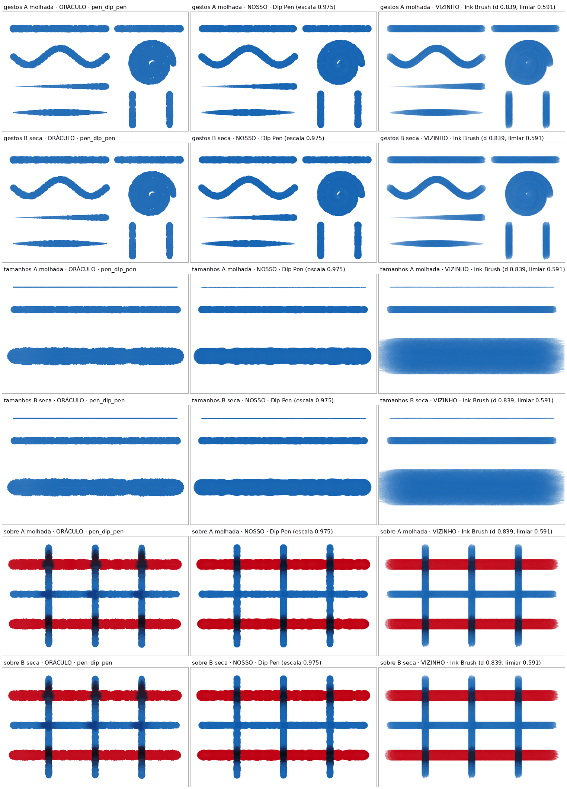
Foto do exame — esquerda: o app de referência; meio: o nosso; direita: o nosso pincel mais parecido, para ver que são diferentes.
Experimente
Mapping Pen e Ink Brush: pressão leve→forte→leve num só traço.
Ballpoint azul por cima de um traço vermelho: o cruzamento fica violeta acinzentado.
Dip Pen lento e depois rápido: o rápido não vira bolinhas.
Pergunta 1 — a ponta fina no fim do traço (só no modo Digital).
Nas canetas do Digital (Ballpoint, Mapping Pen) o traço hoje afina no fim como afina no começo
— como na figura ao lado. O Rebelle não faz isso: lá o fim fica redondo. No Wet
Paint fica redondo como no Rebelle. Como testar: com a Mapping Pen, risque com pressão constante e solte. Responda:
(a) fica — o fim afina no Digital; ou (b) sai — o fim fica redondo em todo lado, como no Rebelle.
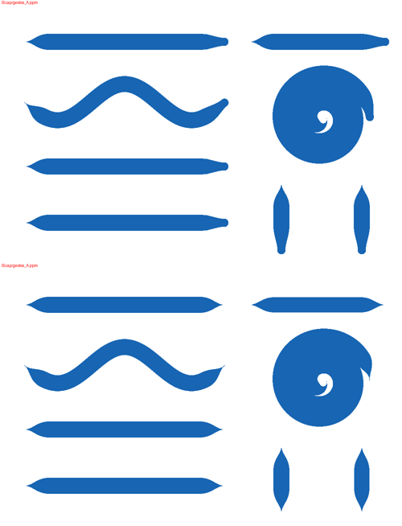
As pontas do traço na caneta do Digital, como estão hoje.
5 · Marcadores e aerógrafo1 no Digital · 2 no Wet Paint
Nenhum dos três passou ainda no exame: são pincéis antigos, corrigidos, que ficam por serem úteis.
Marker Linerajustado
Marcador de bisel: fino num sentido, largo no outro, para contorno (Digital).
dois azuis cruzados viram azul-marinho escuro e chapado.
Marker Bulletajustado
Marcador redondo que acumula: escurece onde se sobrepõe (Wet Paint).
aparece contorno escuro fino na borda, ou cantos escuros no cruzamento.
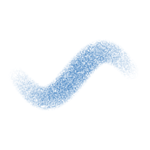
Airbrushajustado
Névoa de pó fino para degradês e luz; não acumula se você parar a mão (Wet Paint).
parar a caneta parada num ponto faz uma mancha crescer.
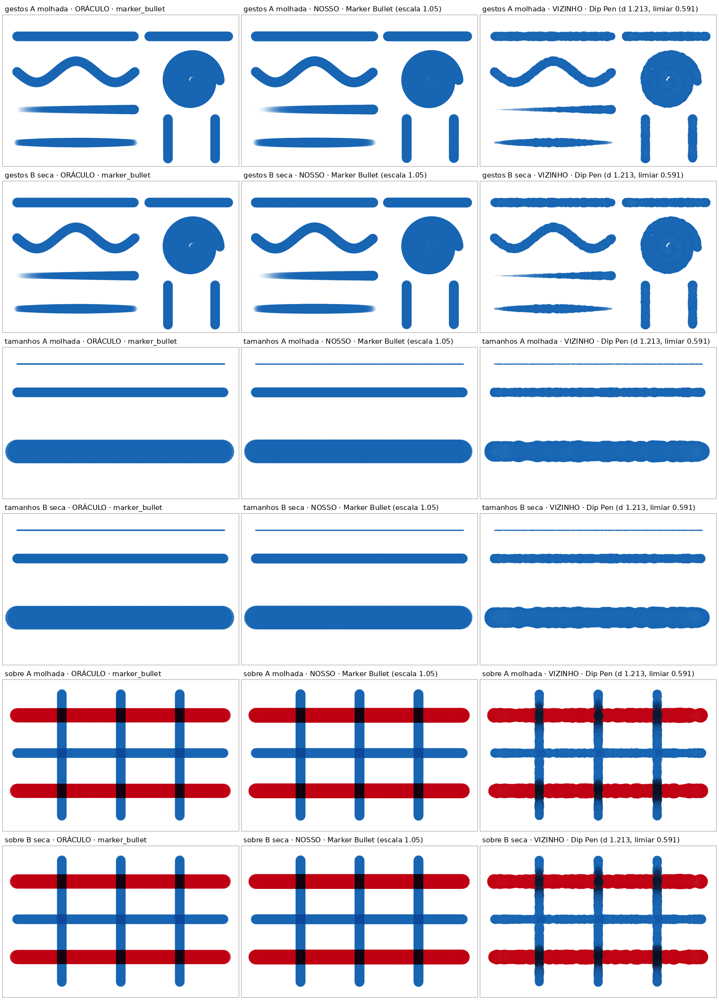
Marker Bullet cruzando cores — esquerda: o app de referência; meio: o nosso; direita: o nosso pincel mais parecido, para ver que são diferentes.
Experimente
Marker Bullet: passe duas vezes no mesmo lugar — o cruzamento escurece.
Marker Liner: risque na horizontal e na vertical — larguras diferentes.
Airbrush: segure parado um segundo — não deve formar poça.
6 · Óleomodo Wet Paint · 4 pincéis
Tinta grossa que mistura com a que está embaixo.
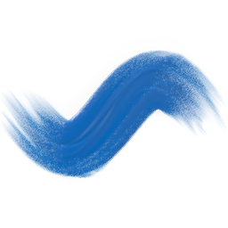
Filbertaprovado
Língua-de-gato: largo de lado, fino de canto, com os fios visíveis — para retrato.
a marca sai quadrada e sem os fios.
Oil Bristleajustado
Óleo de cerdas, com sulcos que puxam a cor de baixo.
aparecem degraus ou blocos pretos e brancos nos fios (aproxime o zoom).
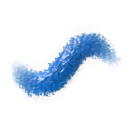
Dabberajustado
Toques curtos de cerdas, como esponja: folhagem, impressionismo.
sai um traço liso e contínuo, sem as manchas.
Express Oilajustado
Óleo rápido e fluido, para estudos de primeira.
por cima do vermelho fica transparente e fraco.
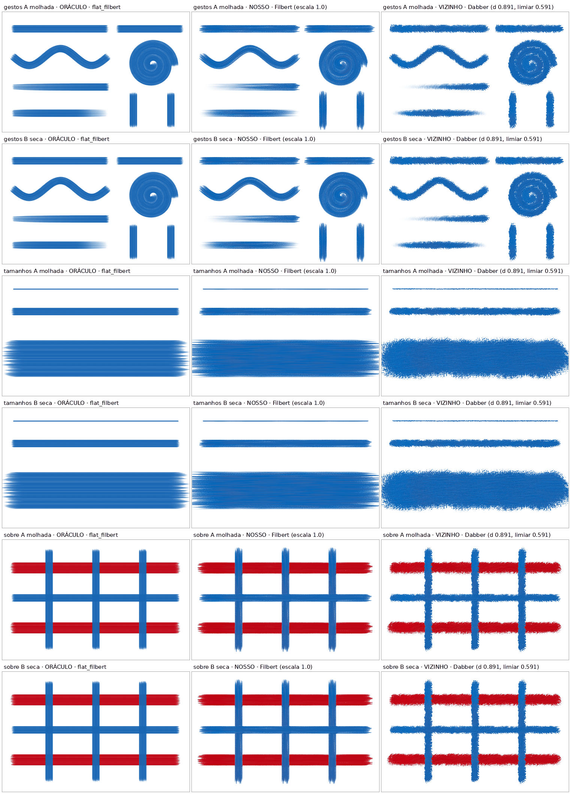
Foto do exame — esquerda: o app de referência; meio: o nosso; direita: o nosso pincel mais parecido, para ver que são diferentes.
Experimente
Por cima dos traços azuis já pintados, com amarelo: a cor de baixo mistura nos sulcos.
Filbert deitado e de pé: largo e fino.
Dabber com toques curtos, sem arrastar.
7 · Pastel e ceramodo Wet Paint · 5 pincéis
Pó e cera sobre papel com grão: a cor pega nos picos do papel e deixa os vales brancos.
Pastel Sideaprovado
O bastão de pastel deitado: faixa larga, translúcida e riscada, para fundos.
a borda sai em degraus de carimbo.
Soft Pastelajustado
Pastel macio: cor opaca nos picos do papel.
a linha fina sai tracejada.
Square Hardajustado
Pastel duro de aresta: linha nítida com grão, para detalhe.
o grão sai salpicado com furos brancos grandes.
Oil Pastelajustado
Pastel oleoso: cor cremosa que arrasta a de baixo.
num tamanho grande aparece uma grade de carimbos.
Wax Scrapeajustado
Raspa a cera e mostra a camada de baixo (como raspar giz de cera).
as fitas saem com borda dura e falhas.
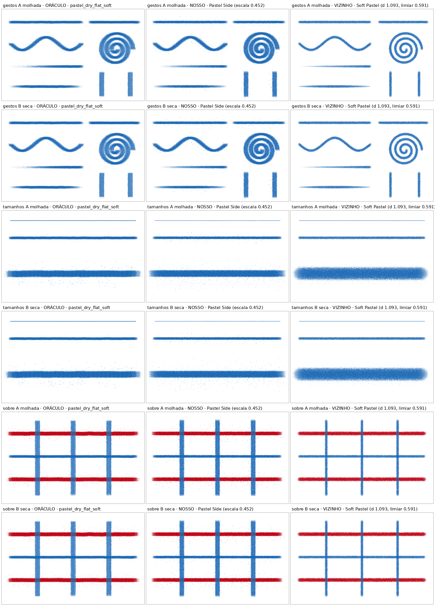
Foto do exame — esquerda: o app de referência; meio: o nosso; direita: o nosso pincel mais parecido, para ver que são diferentes.
Experimente
Pressão leve→forte: leve mostra mais papel branco, forte cobre mais.
Wax Scrape por cima dos traços azuis.
Oil Pastel grande (100 px ou mais), num traço longo.
8 · Lápis e carvãomodo Wet Paint · 7 pincéis
A série de grafite vai do mais duro ao mais macio: 2H · HB · 2B · 8B — cada um mais escuro e mais largo que o anterior. Na lista eles já aparecem nessa ordem.
Graphite 2Hajustado
Lápis claro e fino, para linhas de construção que somem.
sai tão escuro quanto o HB.
Graphite HBajustado
Cinza médio, o esboço do dia a dia.
o traço fino falha em pontinhos em vez de sair contínuo.
Graphite 2Bajustado
Escuro e macio, para esboço expressivo.
o grão sai em montes em vez de salpico miúdo.
Graphite 8Bajustado
Negro e largo, para os valores escuros.
a borda sai lisa demais, como caneta.
Colored 4Bajustado
Lápis de cor ceroso: a cor deixa o branco do papel nos vales.
sai cinza como grafite, em vez da cor escolhida.
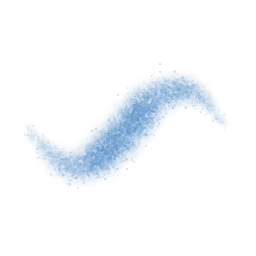
Charcoalajustado
Carvão negro e poroso, grão forte, para figura e valor.
aparecem arranhões brancos e manchas de tom.
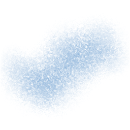
Scratchajustado
Riscos finos e nervosos, para arranhões e pelo.
num tamanho grande vira névoa, em vez de riscos nítidos.
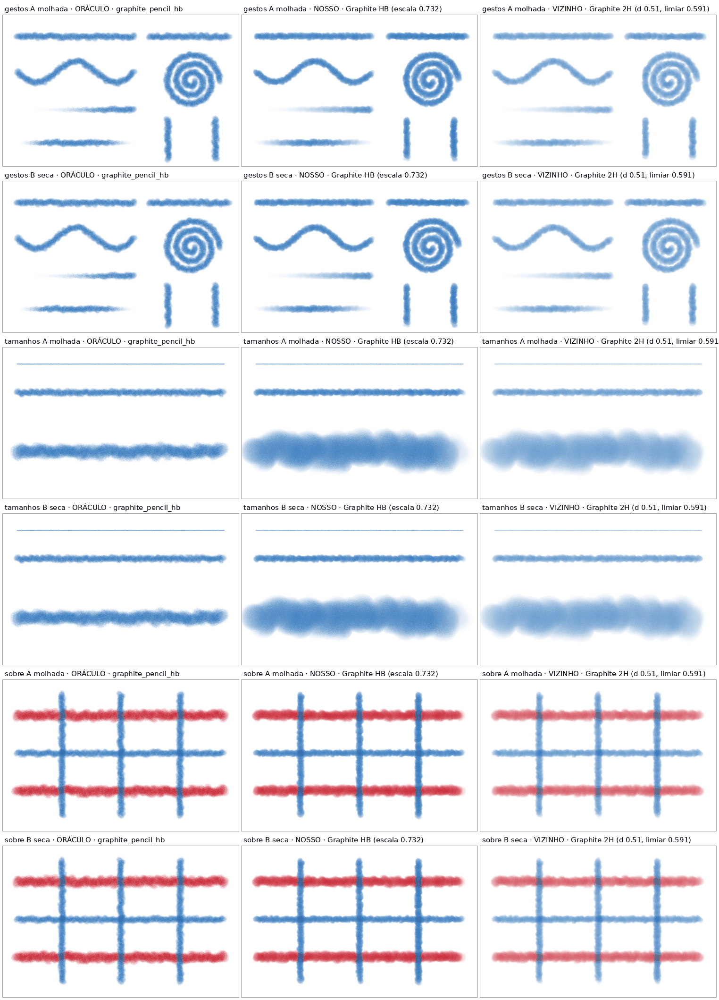
Foto do exame — esquerda: o app de referência; meio: o nosso; direita: o nosso pincel mais parecido, para ver que são diferentes.
Experimente
Risque os quatro grafites lado a lado, mesma pressão: do mais claro (2H) ao mais escuro (8B).
Pressão leve→forte num só: escurece aos poucos.
Pergunta 2 — o tamanho máximo de cada pincel.
Como no Rebelle, cada pincel tem hoje um tamanho máximo próprio: um lápis para por
volta de 60 px mesmo que você leve o tamanho até o fim (um lápis de 200 px não
existe de verdade — e sem esse limite o pincel ficava quatro vezes mais pesado). Como testar: escolha o Graphite 2B e arraste o Size até o fim; risque. Depois faça o
mesmo com o Soft Round. Responda: (a) fica — cada pincel tem o seu máximo; ou
(b) sai — todo pincel cresce até o tamanho que eu pedir.
9 · Aguarela e guachemodo Wet Paint · 7 pincéis
A tinta continua a mexer depois que você solta: espalha, escurece a borda ao secar. Solte e espere alguns segundos antes de julgar.
Wet Roundajustado
Pincel de aguarela: escorre e escurece a borda ao secar.
a cor sai pálida e fraca.
Wet Washajustado
Lavagem larga e uniforme, para céus e fundos.
a mancha sai com contorno escuro ou em losango nítido.
Wet Flatajustado
Chato molhado: faixas planas de aguarela.
pinta igual ao Gouache Flat.
Wet Linerajustado
Fio de aguarela: linha fina molhada para detalhe.
cruzando o vermelho molhado, sai uma mancha quadrada de aro escuro.
Wet Dry Brushajustado
Pincel seco de riscos soltos, com falhas brancas no grão.
os riscos saem cheios e contínuos, sem falhas.
Wet Dripajustado
Aguarela que escorre para baixo, para escorridos.
não escorre nada depois de soltar.
Gouache Flatajustado
Guache: faixas mates e opacas.
a cor sai menos carregada que a do Wet Flat.
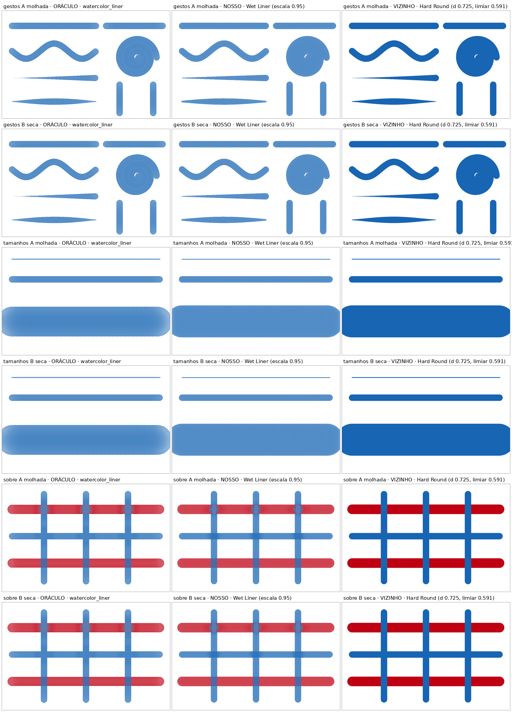
Wet Liner azul cruzando vermelho molhado — esquerda: o app de referência; meio: o nosso; direita: o nosso pincel mais parecido, para ver que são diferentes.
Experimente
Pinte vermelho com o Wet Round e, ainda molhado, cruze com azul.
Wet Drip: um traço carregado e espere.
Wet Flat e Gouache Flat lado a lado: a guache mais opaca.
O que ficou de fora, e porquê
O que ainda falta aos 27 pincéis «ajustados»
Eles estão na caixa porque já são úteis e diferentes dos outros, mas ao lado do original
ainda se vê uma diferença. Quase todas caem em seis famílias — e cada uma é uma
peça do motor de pintura, não do pincel: curada uma, vários pincéis melhoram juntos.
o que falta
em quem se nota
Molhado sobre molhado: no original, a cor nova abre uma mancha redonda e suave na tinta
ainda molhada e a empurra para os lados; no nosso sai um aro duro ou um quadrado
Wet Liner, Wet Wash, Wet Round, a guache
Pontas cortadas a direito: o bastão de pastel corta reto no começo e no fim; o nosso esmaece ou arredonda
Soft Pastel, Square Hard, Charcoal, Wax Scrape
O traço muito grande: a 200 px o original esbate as pontas e carrega o miolo
Wet Liner, Wet Wash
Uma cor por cima da outra: azul sobre vermelho e azul sobre azul não se comportam como no original
O grão e a gota: o pó ou o spray saem finos demais, sem as gotas grossas
Airbrush, Charcoal, Square Hard, Soft Pastel
A entrada e a ondulação: a pressão marca tarde, o contorno não ondula
Ink Bullet, Dip Pen, Oil Bristle, Express Oil
Os que foram estudados e não entraram
pincel
porquê
Juntou-se a outro a ideia ficou noutro pincel
Acrylic Round, Rigger, Mechanical 0.5 e Monoline → Hard Round · Charcoal Pencil → Soft Pastel
· Hue e Overlay → Color Glaze · Fountain Pen → Ink Bullet · Grainy Shader →
Airbrush · Wax Crayon → Graphite 8B · Round Pressure e Studio Pen pintavam igual ao Hard Round
· Technical Pen pintava igual ao Pixel 1px
Aguarela e guache
Mop, Gouache Round, Gouache Wash, Gouache Dry, Water Brush, Bristle Watercolor, Sumi-e, e as manchas
de grão, couve-flor e salpico: todos esperam a peça do molhado sobre molhado ou das cerdas
que crescem com o pincel. O Gouache Wash é o mais perto de passar.
Tinta e nanquim
Reed Pen, Wood Stick, Gloop Pen, Gesinski Ink, Dry Ink: o borrão, a serrilha das fibras ou o grão
não batem. Ink Bleed precisa de a tinta correr pelas fibras do papel, o que o motor ainda não faz.
Lápis e carvão
Tilted Shade (sombrear com o lado da mina), Rough Sketch, Craft Flat, Compressed Charcoal, Charcoal Powder:
a ponta, a fibra ou as riscas paralelas ainda não saem.
Óleo e espátula
Flat Oily e Knife Smooth saíram no seu teste de 19/10: a lâmina não gira com o traço,
e um traço de pé vira bloco largo. Palette Knife, Rake, Thick Impasto e Flat Bristle seguem em estudo.
Texturas e spray
Spray Can, Splatter, Stipple, Foliage, Grass, Noise Grit, Glow, Metallic, Sketchy Web: a gota, os tufos, o brilho
ou a teia ainda não ficam certos em tamanho grande.
Mistura
Blender Grainy, Dry/Lift, Smudge Finger, Blur: o alcance, a borda ou o fio do arrasto ainda não batem.
Caligrafia
Script, Shale, Broad Nib, Marker Chisel, Dry Marker: faltam as pontas côncavas e o azul sobre azul.
Quando terminar o teste, diga só três coisas: (1) qual pincel, se algum, deu
errado e como; (2) a resposta da Pergunta 1 (a ponta fina, fica ou sai); (3) a resposta da
Pergunta 2 (o tamanho máximo, fica ou sai).